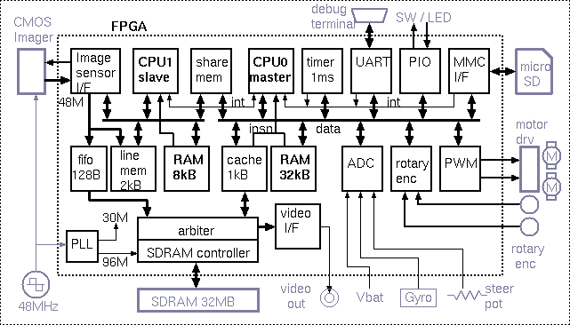
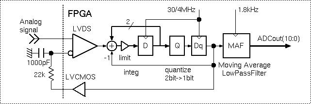

FPGA
mm-6/ハードウェア
FPGA
ブロック図 : FPGA の内部構成です
２CPU
FPGAの中に CPU0/master CPU1/slave の2つのCPUを組み込んでいます。slaveで画像処理を行うことで、masterの負荷を軽減します。
- CPU0/master
走行制御、迷路解析、外部記憶(SDカード)、デバッグ通信 - CPU1/slave
イメージ センサの画像処理
CPU0/master
- 外部記憶(SDカード)
- micro-SDカードを外部記憶として用い、FAT16ファイルシステムを使用する
- メインメモリ(32kB RAM)にはモニタプログラムが入れてあり、デバッグターミナルからの操作や基板上のスイッチ操作でSDカード上のプログラムファイルをメインメモリ及びSDRAMにロードして実行する
- 走行中のログデータは一旦SDRAMに記録しておき、走行終了後にSDRAMから読み出してファイルに書き込む
- 走行中にイメージ センサで撮影した画像はSDRAMに記録されており、これをファイルに書き込むこともできる
- 走行制御
- １msのタイマー割り込み処理でメカのサーボ処理を行う
- PWMでモータードライバを駆動
- ロータリーエンコーダ回路で走行距離とタイヤの回転数を計測
- ADCでステアリングの角度(pot)と車体の角速度(Gyro)を計測
CPU1/slave
- イメージ センサの画像処理
- 画像データはImage sensor I/F から line memoryに書き込まれ、これを処理して距離情報を得る
- センサのフレーム単位に画像処理を開始し、得られた距離情報を shared memory を介してmasterに送る
- 距離情報の取得完了をmasterへ割り込みで通知する
- masterからの起動方法
- 電源投入時、slaveはリセット状態になっている
- slaveのプログラム／データRAMはmasterのアドレス空間にも配置されており、masterからコードをロード
- masterがslaveのリセットを解除して起動
SDRAMコントローラ
- PC-133対応 256Mbit(32MB x8)のSDRAMを96MHzで使用
- SDRAMコントローラは64Byte単位でバーストアクセス
- arbiterでイメージ センサの画像データ書き込み、ビデオ出力用の画像データ読み出し、master CPUのキャッシュ読み書き、の要求を調停する
- 1kBのキャッシュメモリ経由でmaster CPUから読み書き出来る
SDRAMの96MHz動作は簡単ではなく、FPGAの論理合成時にSDRAMピンの信号タイミングを揃える必要があります。注意深く合成ツールのタイミング制約をおこないます。
SDRAMのクロックのタイミングは合成ツールでうまくコントロールできず、タイミング切り替え可能な回路にして調整しました。自宅の60MHz帯域のオシロスコープでは、96MHzの信号波形を見るのに不十分で、手探りになりました。
アナログ入力
FPGAにはADコンバータは内蔵されていません。
アナログ値をディジタルに変換するのに、FPGAのLVDS差動レシーバを利用した回路を工夫してみました。
AD変換回路
LVDS差動レシーバをアナログのコンパレータとして用い、レシーバの＋入力にアナログ信号を加え、-入力にはFPGAからのロジック出力信号にRCローパスフィルタをかけてフィードバックします。
レシーバの出力をディジタル積分し、積分結果を2値化したものがフィードバック出力です。積分は30/4MHzクロックで演算しています。
この2値信号をMAF(移動平均ローパスフィルタ)で平滑し、1.8kHzでダウンサンプルした結果が11ビットのAD変換結果になります。
デルタシグマAD変換器もどきです。
正しい使い方ではないのですが、今回の用途には問題なく使えています。